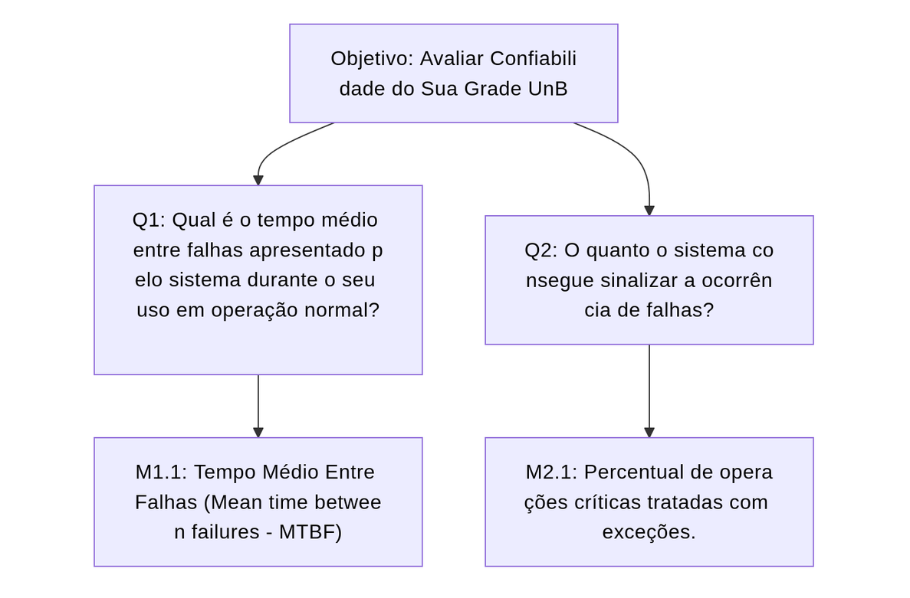

Medição 1 - Confiabilidade
Objetivo de Medição 1: Confiabilidade¶
| Analisar | Sua Grade UnB |
|---|---|
| Para o propósito de | Avaliar |
| Com respeito a | Confiabilidade |
| Do ponto de vista da | Equipe do projeto |
| No contexto da | Disciplina de Qualidade de Software 1 (FCTE - UnB) |
Perguntas e Hipóteses de Medição¶
Para alcançar o objetivo de medição para a característica de Confiabilidade, abaixo foram elaboradas questões com suas respectivas hipóteses (as quais estabelecem metas que ilustram a qualidade atual do sistema a partir das métricas que serão estabelecidas posteriormente neste fragmento).
Confiabilidade: Grau em que um sistema, produto ou componente executa as funções especificadas sob condições especificadas por um período de tempo especificado
Questão 1: Maturidade (Grau em que um sistema, produto ou componente atende às necessidades de confiabilidade sob operação normal)
Qual é o tempo médio entre falhas apresentado pelo sistema durante o seu uso em operação normal?
- Hipótese 1.1 (H1.1): O sistema apresentará um Tempo Médio Entre Falhas (MTBF) superior a 10 minutos ou nenhuma falha encontrada.
Questão 2: Tolerância a falhas (Grau em que um sistema, produto ou componente opera conforme o pretendido, apesar da presença de falhas de hardware ou software)
O quanto o sistema consegue sinalizar a ocorrência de falhas?
- Hipótese 2.1 (H2.1): 90% ou mais das operações críticas, como conexões com banco de dados, manipulação de arquivos e autenticação e autorização de usuários, possuirão um mecanismo adequado de tratamento de exceções (try-catch).
Seleção das Métricas¶
Questão 1: Maturidade
-
Métrica 1.1: Tempo Médio Entre Falhas (Mean time between failures - MTBF)
- Definição: Tempo decorrido de sessão de uso controlado do sistemas dividido pelo número de falhas detectadas durante essa sessão de uso.
- Fórmula:
(Tempo da sessão de uso em minutos) / (quantidade de falhas identificadas) -
Coleta:
- Iniciar uma sessão de uso com usuários finais;
- Incrementar 1 em um contador iniciado em 0 a cada falha encontrado pelos usuários;
- Ao final da sessão, coletar o tempo decorrido da mesma em minutos;
- Aplicar a fórmula apontada acima.
-
Pontuação de Julgamento:
Excelente Bom Regular Insatisfatório MTBF > 10 minutos ou nenhuma falha detectada MTBF entre 4 e 10 minutos MTBF entre 1 e 4 minutos MTBF < 1 hora - Propósito: Avaliar o nível de estabilidade alcançado pelo produto sob a perspectiva dos usuários finais.
Questão 2: Tolerância a falhas
-
Métrica 2.1: Percentual de operações críticas tratadas com exceções.
- Definição: Percentual de operações críticas que estão contidas dentro de um bloco de exceções (
try-catch). - Fórmula:
(Número de operações críticas com try-catch / Número total de operações críticas) * 100 -
Coleta:
- Definir a lista de "operações críticas": chamadas de função/método para conexão com banco de dados, manipulação de arquivos, manipulação de dados do web scraping, autenticação e autorização.
- Em todo o código-fonte do projeto, contar o número total de ocorrências dessas operações.
- Contar quantas dessas ocorrências estão sintaticamente dentro de um bloco
try { ... }. - Aplicar a fórmula acima.
-
Pontuação de Julgamento:
Excelente Bom Regular Insatisfatório ≥ 90% 70%–89% 40%–69% < 40% - Propósito: Medir a robustez do código contra erros em tempo de execução.
- Definição: Percentual de operações críticas que estão contidas dentro de um bloco de exceções (
Critérios para Julgamento¶
- Aceitável: ≥ 70% das métricas classificadas como "Bom" ou "Excelente". O sistema demonstra robustez e previsibilidade.
- Parcialmente aceitável: Entre 40% e 69% das métricas com nível "Regular" ou superior. O sistema funciona, mas pode apresentar instabilidades pontuais.
- Inaceitável: > 30% das métricas atingindo o nível "Insatisfatório". A estabilidade do sistema é considerada crítica e propensa a falhas.
Relação entre a Confiabilidade, Perguntas e Métricas¶
| Questão | Métricas Simplificadas | Tipo de Coleta |
|---|---|---|
| Maturidade Qual é o tempo médio entre falhas apresentado pelo sistema durante o seu uso em operação normal? |
M1.1: Métrica 1.1: Tempo Médio Entre Falhas (Mean time between failures - MTBF) | Tempo decorrido de sessão de uso controlado do sistemas dividido pelo número de falhas detectadas durante essa sessão de uso. |
| Tolerância a falhas O quanto o sistema consegue sinalizar a ocorrência de falhas? |
M2.1: Métrica 2.1: Percentual de operações críticas tratadas com exceções. | Percentual de operações críticas que estão contidas dentro de um bloco de exceções (`try-catch`). |
Diagrama GQM - Confiabilidade (Representação Estrutural)¶

Bibliografia¶
BRITISH STANDARDS INSTITUTION. BS ISO/IEC 25010: Systems and software engineering — Systems and software Quality Requirements and Evaluation (SQuaRE) — System and software quality models. Londres, 2011.
INTERNATIONAL ORGANIZATION FOR STANDARDIZATION; INTERNATIONAL ELECTROTECHNICAL COMMISSION. ISO/IEC WD 25023: Systems and software engineering – Systems and software Quality Requirements and Evaluation (SQuaRE) – Measurement of system and software product quality. Esboço de Trabalho (Working Draft). Editado por Motoei Azuma e KeumSuk Lee. Genebra, 2011.
Histórico de Versão¶
| Versão | Data | Descrição | Autor(es) |
|---|---|---|---|
1.0 |
11/06/2026 | Adição do documento de conclusão da Fase 2 e da tabela de histórico de versão. | Marllon Cardoso |